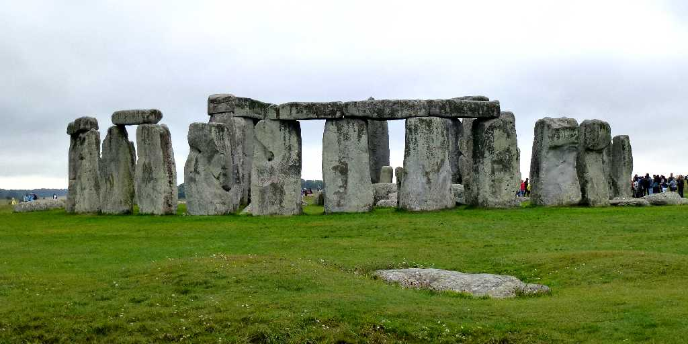
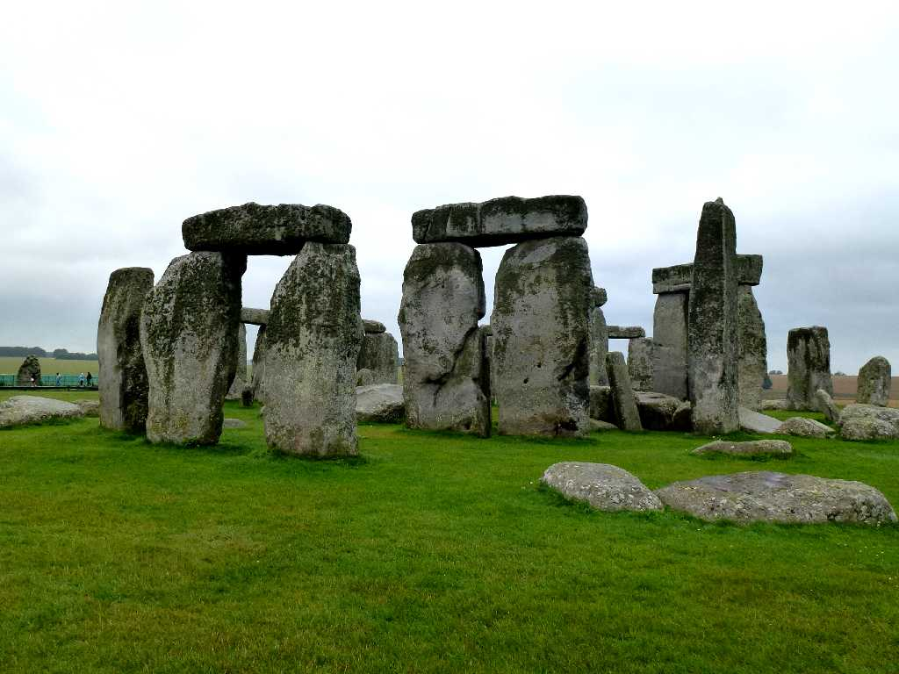
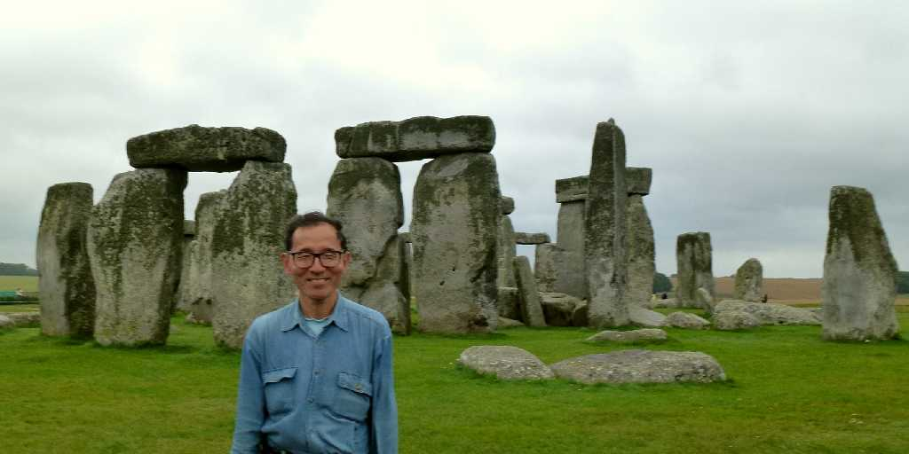
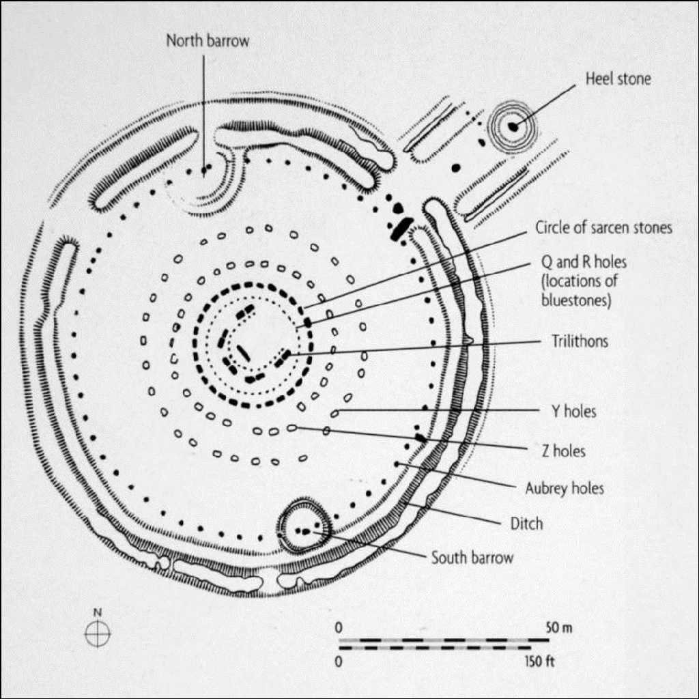

Stonehenge Salisbury Plain Wiltshire
８０日間世界一周鉄道の旅で５５日目 ストーンヘンジは紀元前３１００年頃の人骨が溝と土手から出土し紀元前２５００年頃から２０００年頃に高さ５ｍ３０ｔの巨石が立てられた直径１００ｍほどの祭壇ではないかと考えられている

Stonehenge
夏至の日にアルターストーンから見てヒールストーンより太陽が上る配置となっていことから古代の礼拝堂または天文台などと考えられている

August 17 2013 Stonehenge
季節を知る天文台であり豊作を祈る神の祭壇であり祖先の功績を祀るお墓でもあったのか


 AI解説
AI解説